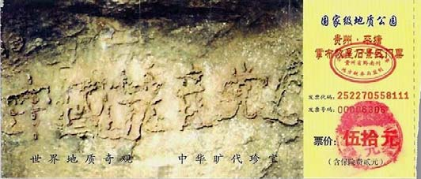

1. 为什么说“天灭中共”？
2. 为什么说共产党是邪灵？什么是抹兽记？
3. 为什么说退党团队是关系每个人的生死存亡的大事？
4. 为何说共产党是邪教？
5. 退党？我们没有必要搞政治吧？
6. 有人认为“心中退党（团、队）不必声明”，或多年没交党费，就算自动退出了，没有必要走个形式。
7. 退党人数是真实的吗？
8. 有些人觉的“退党”这个问题来得太突然了，不相信。
9. 退党就不爱国吗？
10. 目前中国政府都是党员所组合而成，号召退党将造成国家不稳定。
11. 我内心早已不真正信仰共产党，入党也只是应付，为的是能有一个好的生活，实际上跟共产党扯不上关系，为何还需要发表声明退出共产党或是退团、退队？
12. 目前也有很多法轮功学员退党，他们还劝说周围的亲朋好友退，所以有人认为法轮功在搞政治。
1. 为什么说“天灭中共”？
答：首先说明：中共不等于中国，爱国不等于爱党，中共是从西方跑到中国的邪灵。 从天象看：2004年11月，海外中文媒体“大纪元时报”发表《九评共产党》，从历史、政治、经济、文化、信仰等层面深刻揭示了中共的欺骗、暴力、邪教和流氓本性，由此在中国大陆引发了这场退出中共党、团、队组织（“三退”）的精神觉醒运动。
截至2016年2月29日，在海外“大纪元”网站声明退出中共党、团、队组织（三退）的人数已经超过2亿2千876万。而且现在每天的“三退”人数都达到8～10万人。这其实就是“天灭中共”的天象。
从天理看：善恶报应的天理决定了做恶多端的中共必遭天惩。中共建政以来，破坏道德，打击善良，迫害正信，毒害人民。周期性的政治运动迫害了中国一半以上的家庭，造成了8000万中国同胞丧生，这一数字超过了两次世界大战死亡人数的总和。接二连三的各种血腥政治运动，镇反、三反、五反、肃反、反右、荒诞的大跃进和相继而来的三年大饥荒、反右倾、四清、文革、“六四”镇压学生、迫害法轮功，等等等等，无数善良人成了中共的虐杀对象。中共血债累累，罪恶滔天，必遭天谴；再看当今的中国社会，贤良受辱，小人猖獗，礼崩乐坏，世风日下，道德沦丧，信义无存，黄赌毒、假货泛滥成灾。工人失业，农民失地，贪官横行，官商勾结，警匪一家，民不聊生，老百姓有冤无处诉，中共祸国殃民已经到了如此地步，人神共愤，上天还能容它吗？！古人云：“善恶到头必有报”，“天灭中共”实乃天意之必然。
中国被称为神州，中国的文化素有“神传文化”之称，“预言”则是神传文化的重要组成部分。中国比较著名的预言包括：周朝的《乾坤万年歌》，汉代诸葛亮的《马前课》，唐代李淳风的《推背图》，宋代邵雍的《梅花诗》，明代刘伯温的《烧饼歌》等。在外国比较著名的预言有：《圣经•启示录》，法国诺查丹玛斯留下的《诸世纪》，韩国的《格庵遗录》等。众多的预言，出自不同的文化和地区，跨越不同的时代，却都预言了中国的朝代更迭、中共的产生与灭亡，预言了即将在中国发生的一件惊天动地的大事：天要灭中共，以及天灭中共时其追随者将被一同诛灭的可怕惨景！
2002年6月，在贵州省平塘县掌布乡发现了距今2亿7千万年的“藏字石”，五百年前崩裂的巨石断面内惊现六个排列整齐的大字“中國共產党亡”，其中那个“亡”字特别的大。中国的各路地质专家经实地考察后，一致鉴定石头上的字为天然形成，无人工雕琢、塑造、粘贴的痕迹。当时国内一百多家媒体，包括新华社、中央电视台，都做过相关报道和专题节目（上图为“藏字石”照片，小图为门票）。（注：2011年初，别有用心的人把含有“中國共產党亡”的门票照片在网上删掉了，还剩几张照片可供参考，同时还登出了诽谤法轮功的文字，请大家明辨是非，不要上当。）
2. 为什么说共产党是邪灵？什么是抹兽记？
答：天地万物皆有灵，共产党也不例外，只不过它是一个邪灵。被“马克思主义者”奉为祖宗的马克思，生前加入魔鬼撒旦教，诅咒全人类下地狱，包括工人和那些为共产主义而战的人。马克思在《共产党宣言》的开头第一句就说：“一个幽灵，共产主义的幽灵，在欧洲游荡”。共产党的老祖宗都说共产党是魔鬼幽灵，也就是邪灵。
高门墓地是伦敦地区的撒旦崇拜中心，许多崇拜魔鬼的黑色仪式在这个墓地举行。 这个邪灵在另外空间的显象是红色恶龙（赤龙），中共崇尚红色、嗜血好杀，正体现了其邪灵本性；这个邪灵在人间的表现形式就是共产党。中共这个西来的邪灵依靠谎言和暴力在华夏神州倒行逆施数十载，给中国人民带来深重的灾难。
人们加入中共的党、团、队组织举起右手发毒誓甘愿为共产党献身，其实就是对着魔鬼幽灵发毒誓，就是把生命交给魔鬼幽灵，成为它的奴隶和工具。这样的誓言是一个卖身契，是一个毒誓，随着誓言的发出，在宣誓者的额头上就被红色恶龙印上了一个“兽的印记”（简称“兽记”或“兽印”，“兽的印记”体现在另外空间的身体上）。能否抹去兽记，将是人人都必须面临的生死选择，也是其还能否得到神的救度的见证。当人们出于正义和良知声明退出中共的党、团、队（三退）时，也就是神佛抹去你的兽记之时，也是你生命的新生之时。
《圣经•启示录》预言“最后的审判”到来时，将淘汰所有印上兽记的人。那么曾经加入过中共党、团、队的人要避过这场灾难，唯一的办法就是声明退出中共的党、团、队组织，抹去兽记！这是关系到每个人的生死存亡的大事。
3. 为什么说退党团队是关系每个人的生死存亡的大事？
答：中国大陆绝大部分人都加入过共产党、共青团或少先队等组织。当“天要灭中共”时，这些人怎么办？那么神就要给人一个选择的机会。是抛弃邪恶、选择光明，还是做邪党的替罪羊、随着邪党下地狱，这难道不是关系到每个人的生死存亡的大事吗？
4. 为何说共产党是邪教？
答：共产党实质上是打着科学的旗号反科学。科学要求实事求是，可中共的历史就是一部“假大空”和“假恶斗”的历史。
共产党与正教有鲜明的区别。因为正统的宗教都是相信神的，相信善的，以道德育化人和拯救人的灵魂为目的，而共产党不相信天地神灵，相信“枪杆子里面出政权”的暴力，并且反对传统道德。
以阶级斗争、暴力革命和无产阶级专政为中心的共产党教义，导致了充满血腥暴力与屠杀的所谓共产革命。共产党政权的红色恐怖持续约一个世纪，祸及半个世界，导致数千万至上亿人丧生。这样一个创造人间地狱的共产党信仰，正是人世间的头号大邪教。
十多年前，前苏联和东欧各国共产党政权纷纷解体，共产主义运动早已被全世界所唾弃，中国共产党走入坟墓也只是一个时间的问题。
5. 退党？我们没有必要搞政治吧？
答：政党是真正的政治，中共搞的又是政治中最肮脏的政治。入党就是在参与政治，不参与政治入党干什么？因为共产党就是搞政治的。所以退党不是搞政治，而是宣布退出、远离中共的肮脏政治。
还有一点，在中国一说起退党的事，就会有人说这是在“搞政治”，不喜欢谈了。而这些不喜欢听的人很多都是党员。因此形成一个奇怪的逻辑，好象加入共产党成为党员不是“搞政治”，而退出共产党反倒成了“搞政治”！
其实所有的政党都是为其政治目的而存在的，所有其党的成员也都是因为赞同其政治纲领而加入的。因此只要是某党的党员，就一定是在参与政治，也就是在“搞政治”。同样，一个人从加入共产党的那一天起，就开始了“搞政治”的生涯。如果真的不想搞政治、不想被政治利用的话，那就只有退党。
6. 有人认为“心中退党（团、队）不必声明”，或多年没交党费，就算自动退出了，没有必要走个形式。
答：这两种情况都没有达到“抹去兽记”的效果。其实，声明“三退”不是走形式，也不是要向中共组织去声明“三退”。声明“三退”是祈求神明抹去“邪灵兽记”。
除共产党外，没有任何一个其它的人间的党派组织这么狠毒，说你加入我这个党，你得握着拳头发毒誓，要你交出一辈子，要你“为党的事业奋斗终生”，这种宣誓唯有共产党有。为什么要这样，实际上在发毒誓那一瞬间，就是被邪灵（共产党另外空间的体）打上了兽印。
这个时候，你说你不交党费了，就算退党（团、队）了，那能是你说了算的吗？它通过那种形式已经把你控制住了，它不认可呀，这个邪灵不认可，你不还是它的一个成员，一粒子吗？你要脱离它，也得要有一定的反过来的形式，公开声明退党（团、队）。
神佛看人心，所以用什么名字退都可以，为了方便，也为了保护你，可以用化名、别名。你这个人真心做了，具体什么名字没关系，但是神知道是你做的，他就可以把你的印记抹掉，把你解脱出来。
所以退党（团、队）看似是形式，实际上不是形式。是必须要走的得救的一步。
7. 退党人数是真实的吗？
答：不仅是真的，而且实际上比这还要多，因为在中国大陆有许多民众无法上网，他们有的将自己的退党声明贴在公共布告栏、车站牌、电线杆、广告栏等处或写在纸币上。目前 ，这个数字并不多，而是太少了，也没有超出我们可以理解的范围。
8. 有些人觉的“退党”这个问题来得太突然了，不相信。
答：南亚大海啸发生的时候，有一个真实的故事，大海啸来之前，在海滩上，海水突然退下去之后，很多西方游客看到贝壳之类的都在海滩上，他们就跑过去捡，然后看到海天泛起很漂亮的云彩，就在那儿欣赏。
当时有一个当地的土著人，知道这个情况不妙，喊他们跑，说有危险。来得很突然，讲得也很突然，当时人都不信他，还嫌他扫兴，硬把他赶走了。那个土著人走了之后，大海啸一下就过来了。
这些不信的人，我们可以反问他一句话，你不相信，但是我请问你，当大海啸要来的时候，你希望我对你说什么？
宁可信其有，不可信其无。要真正把握自己的生命和未来。
9. 退党就不爱国吗？
答：中国不等于中共，爱国不等于爱党。共产党为了维护它的独裁政权，长期大肆宣扬“爱党就是爱国”。当它感到危机时，就说什么“亡党亡国”，企图把共产党与中国绑在一起。这确实迷惑了一部份人，使他们对中国、中共两个概念混淆不清。
中国有五千年文明历史，而中共才几十年，怎么能说它是中国呢？中国先后经历了二十多个朝代，从兴起到灭亡，中国也没有随着哪个朝代的灭亡而灭亡。哪一朝去了下一朝不来？共产党灭亡了，中国依然会屹立在世界的东方。没有了中国共产党，才能有新中国。没有了中国共产党，中国才会有希望。没有了中国共产党，智慧的中国人民一定会复兴中华文明历史的灿烂辉煌，那是全世界人民都羡慕和仰慕的璀璨文明。
10. 目前中国政府都是党员所组合而成，号召退党将造成国家不稳定。
答：中共是中国历史上最不稳定的因素。中国近现代史的几乎所有运动、动乱都是中共造成的。没有中共，中国一定会更加安定。
退党是人们认清共产党邪恶本质后的正义之举。人们退了党，可他们还会做他们的社会本职工作，各个职能部门不会发生任何混乱，只是人们都从心理和形式上摆脱了共产邪灵。一切只会更好。党员退党会造成共产党的全面瓦解，但不会造成动乱。
前苏联和东欧各国，由于摒弃了共产党，现在那里的人民活的更好。
11. 我内心早已不真正信仰共产党，入党也只是应付，为的是能有一个好的生活，实际上跟共产党扯不上关系，为何还需要发表声明退出共产党或是退团、退队？
答：共产党是无神论者，为什么入党时却要宣誓？对谁赌咒发誓？中共保先做什么？重新宣誓！请问有没有共产党员记得他的入党宣誓内容？有没有共产党员包括中共政治局常委认真照着入党宣誓在做？既然没有打算遵守誓约，为什么那么看重宣誓这个形式？其实神看的很清楚，就是邪灵要你重温和它的签约，加强它给你打上的“兽记”。只有发表声明，神佛才能为你“抹去兽记”，使你摆脱邪灵控制，获得新生。
12. 目前也有很多法轮功学员退党，他们还劝说周围的亲朋好友退，所以有人认为法轮功在搞政治。
答：在西方发达社会中，搞政治是个正当的社会行业，而且还是社会地位比较高的。搞政治的基本要点是，必须有政治主张，如想要什么样的社会制度、政治体系，想要自己当政，或者想要谁当政；还要有行动纲领以实现相应的政治目的。“搞政治”一词并不含贬义，也不令人生畏。
相反，中国大陆五十多年来的政治运动中，太多的人和事都被冠以“搞政治”加以钳制乃至镇压，人们已经对“搞政治”形成了负面的看法，谈虎色变，也往往“本能的”害怕这项指控落到自己头上。
其实中国宪法规定，中华人民共和国公民是享有政治权利的。但因为五十多年来“搞政治”成了整人用的一顶吓人的帽子，很多人渐渐淡忘了，直到看到有人被判刑或枪毙时政府宣布该人被“剥夺政治权利终身”，才想到原来中国人没犯罪之前也是享有政治权利的。
法轮功是佛家修炼大法，修炼人没有任何对社会制度、权力的诉求，只是讲人心向善、远离邪恶的真相和道理，每个人选择什么是每个人自己的个人决定。这些根本不是共产党所言的“搞政治”所能涵盖的。
有位法轮功学员在“退党声明”中说：我退出共产党，就是为了不搞政治。他认为共产党和共产党的政治都是肮脏的，他退党就是为了不和共产党沾边。这其实就是很简单明了而切中要害的把这个关系说明白了。
那法轮功学员还劝周围的亲朋好友退党。为什么这样做呢？其实法轮功是修炼，可惜现代中国人对修炼已经很陌生了。《西游记》实际上就是一个描写修炼的故事，讲了一个通过取真经的过程，从中修成圆满的故事。在《西游记》中，孙悟空一路斩妖除魔，来到乌鸡国。乌鸡国的国王被妖怪害死了，妖怪装成国王坐在王位上欺压百姓，无恶不做。孙悟空到那儿之后，识破妖怪。起初连太子都不相信孙悟空的话，后来孙悟空把妖怪除灭了，并使国王起死回生的时候，整个国家的百姓都很高兴、感恩，都开始知道孙悟空做了一件大好事。
不管谁去读这个故事，有谁会说孙悟空是在搞政治、在夺权呢？修炼人为什么这样做呢？因为修炼人看这个世界跟一般世人不一样，修炼人用慈悲看世界，看善和恶，看到灾难来临时，邪恶的东西在控制人、欺压人，甚至把人带向地狱的时候，他是不忍心的，是要帮人解难的。把真相讲出来，劝其“三退”，都是慈悲于人的表现。与邪党说的“搞政治”大相径庭。
等共产邪教灭亡之后，人类必然会迎来美好。大家会由于听信了神的警告和修者的善劝而得到了福份，但那是属于所有悟性好和有善念的世人的。
主页 我要三退